การจัดการข้อมูลและโฟลเดอร์เก็บข้อมูล#
Backend.AI มีพื้นที่จัดเก็บเฉพาะเพื่อเก็บไฟล์ของผู้ใช้ให้คงอยู่ เนื่องจากไฟล์และไดเรกทอรีของเซสชันการคำนวณจะถูกลบเมื่อเซสชันสิ้นสุดลง จึงแนะนำให้บันทึกไว้ในโฟลเดอร์จัดเก็บ คุณสามารถดูรายการโฟลเดอร์จัดเก็บได้โดยเลือกหน้าข้อมูล (Data) ที่แถบด้านข้าง หน้านี้จะแสดงข้อมูลสำคัญ เช่น ชื่อและ ID ของโฟลเดอร์ ชื่อโฮสต์จัดเก็บ (storage host) ที่โฟลเดอร์ตั้งอยู่ (Location) และสิทธิ์การเข้าถึงโฟลเดอร์ (Permission)
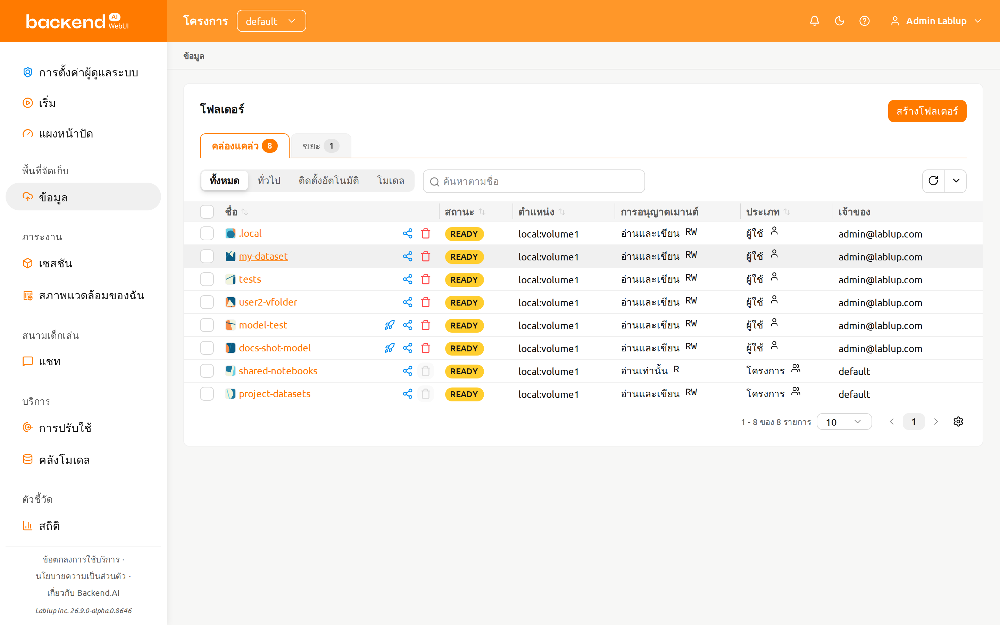
โฟลเดอร์จัดเก็บมีสองประเภท: ผู้ใช้ และ โปรเจกต์ คุณสามารถแยกความแตกต่างได้ในคอลัมน์ 'ประเภท'
ป้ายคำเชิญและจุดเข้าใช้งาน#
เมื่อมีผู้ใช้รายอื่นเชิญคุณให้ใช้งานโฟลเดอร์จัดเก็บของพวกเขาร่วมกัน ป้ายคำเชิญขนาดเล็กจะ ปรากฏที่รายการหน้าข้อมูลในแถบด้านข้าง และข้างกับสรุปสถานะของโฟลเดอร์ ป้ายจะแสดง จำนวนคำเชิญที่ค้างอยู่และยังไม่ได้รับการตอบกลับ
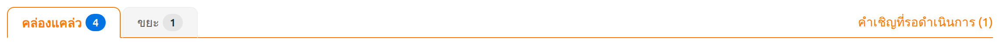
คลิกที่ป้ายเพื่อเปิดรายการคำเชิญ ซึ่งคุณสามารถยอมรับหรือปฏิเสธคำเชิญที่ค้างอยู่แต่ละ
รายการได้ โฟลเดอร์ที่ยอมรับแล้วจะปรากฏในรายการโฟลเดอร์ของคุณทันทีด้วยประเภท เชิญแล้ว หน้า /data เองก็เป็นจุดเข้าใช้งานที่ถูกต้องสำหรับการตรวจสอบคำเชิญด้วย เพียง
เปิดหน้าข้อมูล คุณก็สามารถเข้าถึงรายการคำเชิญเดียวกันได้จากสรุปสถานะของโฟลเดอร์
สร้างโฟลเดอร์จัดเก็บ#
หากต้องการสร้างโฟลเดอร์ใหม่ ให้คลิก 'สร้างโฟลเดอร์' ในหน้าข้อมูล จากนั้นกรอกข้อมูลในกล่องโต้ตอบการสร้างดังนี้:
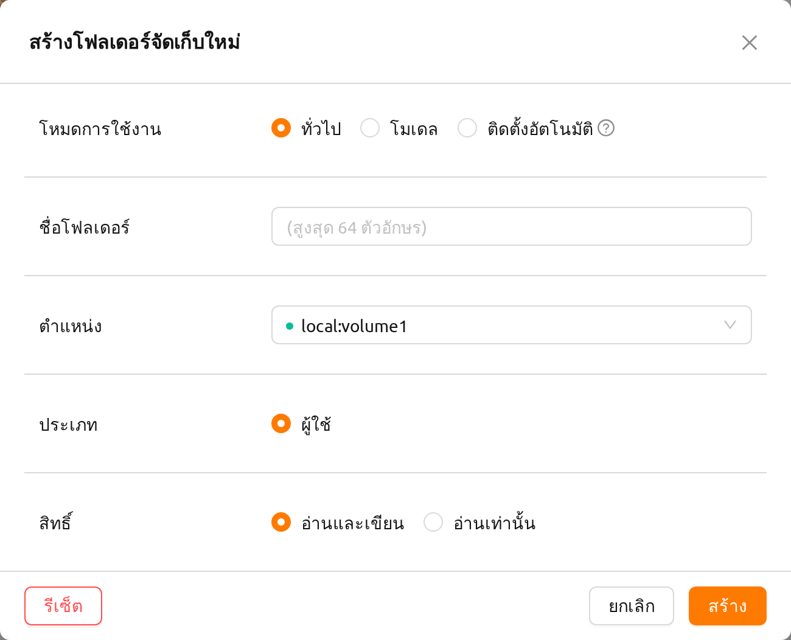
ความหมายของแต่ละช่องในกล่องโต้ตอบการสร้างมีดังต่อไปนี้
โหมดการใช้งาน: กำหนดวัตถุประสงค์ของโฟลเดอร์
- ทั่วไป: กำหนดให้เป็นโฟลเดอร์สำหรับจัดเก็บข้อมูลทั่วไปได้หลากหลายประเภท
- โมเดล: กำหนดให้เป็นโฟลเดอร์เฉพาะสำหรับการให้บริการโมเดลและการจัดการโมเดล หากเลือกโหมดนี้ คุณจะสามารถตั้งค่าว่าโฟลเดอร์นั้นสามารถคัดลอกได้หรือไม่
- ติดตั้งอัตโนมัติ: โฟลเดอร์ที่จะถูกเมาท์โดยอัตโนมัติเมื่อสร้างเซสชัน หากเลือกโหมดนี้ ชื่อโฟลเดอร์ต้องขึ้นต้นด้วยจุด ('.')
ชื่อโฟลเดอร์: ชื่อของโฟลเดอร์ (สูงสุด 64 ตัวอักษร)
ตำแหน่ง: เลือกโฮสต์จัดเก็บ (storage host) ที่จะใช้สร้างโฟลเดอร์ หากมีหลายโฮสต์ ให้เลือกหนึ่งในนั้น ตัวบ่งชี้จะแสดงว่ามีพื้นที่ว่างเพียงพอหรือไม่
ประเภท: กำหนดประเภทของโฟลเดอร์ที่จะสร้าง สามารถตั้งค่าเป็นผู้ใช้ (User) หรือโปรเจกต์ (Project) โฟลเดอร์ผู้ใช้คือโฟลเดอร์ที่ผู้ใช้สร้างและใช้งานได้เพียงคนเดียว ส่วนโฟลเดอร์โปรเจกต์คือโฟลเดอร์ที่สร้างโดยผู้ดูแลระบบและแชร์กับผู้ใช้ในโปรเจกต์
โปรเจกต์: จะแสดงเฉพาะเมื่อคุณเลือกประเภทเป็นโปรเจกต์ โฟลเดอร์นี้สังกัดโปรเจกต์ที่เลือกอยู่ในแถบด้านบนในปัจจุบัน — ไม่มีตัวเลือกโปรเจกต์แยกต่างหาก และข้อความยืนยันจะระบุว่าโปรเจกต์ใดจะเป็นเจ้าของโฟลเดอร์ การตั้งค่านี้จะไม่มีผลเมื่อสร้างโฟลเดอร์ผู้ใช้
สิทธิ์: สิทธิ์การเมาท์ที่ใช้เมื่อเมาท์โฟลเดอร์เข้าไปในเซสชันการคำนวณ อ่านและเขียน อนุญาตให้เขียนลงในโฟลเดอร์ภายในเซสชัน อ่านอย่างเดียว ป้องกันไม่ให้เขียน การตั้งค่านี้ใช้กับทั้งโฟลเดอร์ผู้ใช้และโฟลเดอร์โปรเจกต์ สำหรับโฟลเดอร์โปรเจกต์ การตั้งค่านี้ควบคุมการเข้าถึงสำหรับสมาชิกโปรเจกต์ทั้งหมด
ความสามารถในการคัดลอก: จะแสดงเฉพาะเมื่อคุณเลือกโหมดการใช้งานเป็น "โมเดล" ใช้สำหรับเลือกว่าโฟลเดอร์เสมือน (vfolder) ที่กำลังสร้างควรสามารถคัดลอกได้หรือไม่
โฟลเดอร์ที่สร้างขึ้นที่นี่สามารถเมาท์ได้เมื่อสร้างเซสชันการคำนวณ โฟลเดอร์จะถูกเมาท์ไว้ภายใต้ไดเรกทอรีการทำงานเริ่มต้นของผู้ใช้ คือ /home/work/ และไฟล์ที่เก็บไว้ในไดเรกทอรีที่เมาท์แล้วจะไม่ถูกลบเมื่อเซสชันการคำนวณสิ้นสุดลง
(หากคุณลบโฟลเดอร์ ไฟล์ก็จะถูกลบไปด้วยเช่นกัน)
สำรวจโฟลเดอร์#
คลิกที่ชื่อโฟลเดอร์เพื่อเปิดตัวสำรวจไฟล์และดูเนื้อหาภายในโฟลเดอร์

ตัวสำรวจโฟลเดอร์ใช้เลย์เอาต์แบบสองแผง:
- แผงซ้าย: เบราว์เซอร์ไฟล์ที่แสดงโครงสร้างไดเรกทอรีและรายการไฟล์ในโฟลเดอร์จัดเก็บ
- แผงขวา: ข้อมูลเพิ่มเติมและบันทึก จัดแบ่งออกเป็นสองแท็บ:
- ข้อมูลเมตา: คำอธิบายและคุณสมบัติของโฟลเดอร์ (เดิมแสดงเป็นแผงด้านข้าง)
- Audit Log: บันทึกลำดับเวลาของการดำเนินการที่ทำบนโฟลเดอร์นี้
บนหน้าจอขนาดกว้าง (xl) ตัวแบ่งที่ลากได้จะแยกสองแผงออกจากกัน เพื่อให้คุณสามารถปรับขนาดได้ตามความต้องการ บนหน้าจอขนาดแคบ แผงจะเรียงซ้อนกันในแนวตั้ง

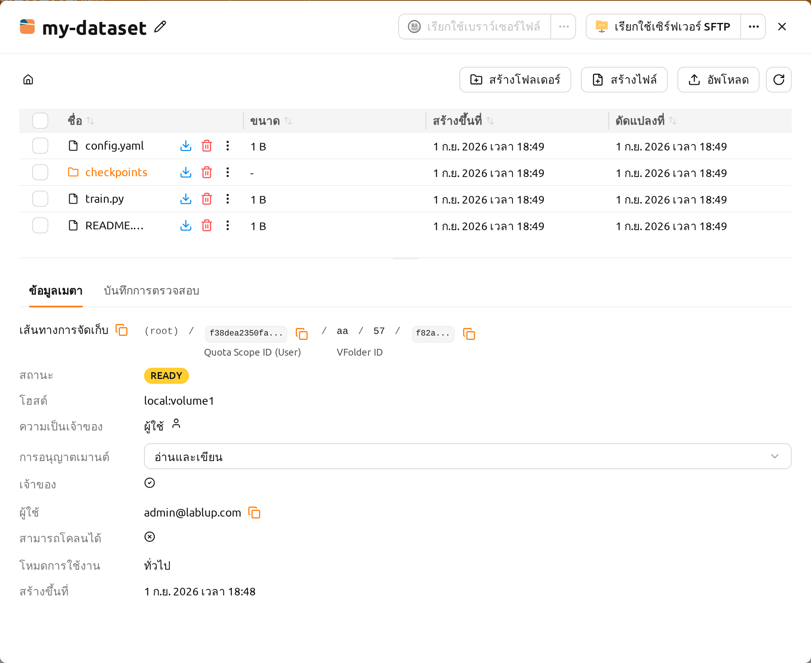
การดำเนินการไฟล์#
ภายในแผงซ้าย คุณสามารถเห็นไดเรกทอรีและไฟล์ทั้งหมดในโฟลเดอร์ คลิกที่ชื่อไดเรกทอรีในคอลัมน์ ชื่อ เพื่อนำทางเข้าไปในไดเรกทอรีนั้น ปุ่มการดำเนินการของแต่ละแถวจะอยู่ในคอลัมน์ ชื่อ ถัดจากชื่อของรายการ คลิก ดาวน์โหลด เพื่อดาวน์โหลดไฟล์หรือไดเรกทอรี คลิก ลบ เพื่อลบ หรือคลิกปุ่มรูปดินสอ (เปลี่ยนชื่อ) ที่อยู่ข้างชื่อเพื่อเปลี่ยนชื่อได้ทันที เมื่อคอลัมน์แคบเกินกว่าจะแสดงปุ่มได้ทั้งหมด การดำเนินการที่เหลือจะย้ายไปอยู่ในเมนู การดำเนินการเพิ่มเติม (⋮) ของแถวเดียวกัน สำหรับการดำเนินการไฟล์ที่ละเอียดมากขึ้น คุณสามารถเมาท์โฟลเดอร์นี้เมื่อสร้างเซสชันการคำนวณ จากนั้นใช้บริการเช่น Terminal หรือ Jupyter Notebook
คุณสามารถสร้างไดเรกทอรีใหม่ในพาธปัจจุบันได้ด้วยปุ่ม สร้างโฟลเดอร์ หรืออัปโหลดไฟล์หรือโฟลเดอร์ภายในเครื่องได้ด้วยปุ่ม อัปโหลด การดำเนินการเกี่ยวกับไฟล์ทั้งหมดเหล่านี้ยังสามารถทำได้โดยใช้วิธีการเมาท์โฟลเดอร์เข้าสู่เซสชันการคำนวณตามที่อธิบายไว้ข้างต้น
การอัปโหลดต้องมีทั้งสิทธิ์ upload-file บน storage host ที่เก็บโฟลเดอร์นี้ และ สิทธิ์การเขียน
บนตัวโฟลเดอร์เอง หากขาดสิทธิ์ใดสิทธิ์หนึ่ง ปุ่ม อัปโหลด (และการอัปโหลดด้วยการลากและวาง)
จะ ถูกปิดใช้งาน ปุ่มจะยังคงปรากฏอยู่แต่จะแสดงเป็นสีเทา และมีคำอธิบายในเครื่องมือแนะนำว่า
ไม่อนุญาตให้อัปโหลด
upload-file คือสิทธิ์ระดับโฮสต์ที่ได้รับผ่านสิทธิ์ระดับโดเมน สิทธิ์ระดับโปรเจกต์
หรือนโยบายทรัพยากรของคีย์แพร์ — หากมี อย่างน้อยหนึ่ง รายการที่มอบสิทธิ์สำหรับ
storage host นั้น คุณจะสามารถอัปโหลดได้ หากปุ่มถูกปิดใช้งาน โปรดขอให้ผู้ดูแลระบบ
มอบสิทธิ์ upload-file สำหรับโฮสต์ที่เก็บโฟลเดอร์นี้ให้แก่คุณ คุณสามารถระบุได้ว่า
โฟลเดอร์อยู่บนโฮสต์ใดจากคอลัมน์ ตำแหน่ง ในรายการโฟลเดอร์ หรือจากลิ้นชัก
รายละเอียดของโฟลเดอร์
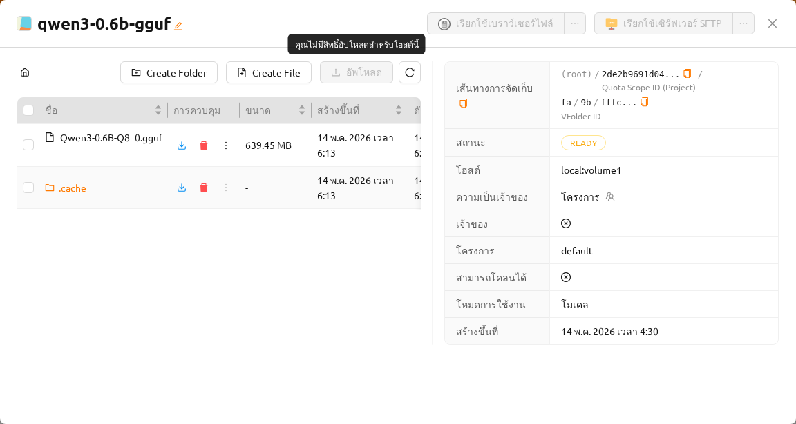
ความยาวสูงสุดของไฟล์หรือไดเรกทอรีภายในโฟลเดอร์อาจขึ้นอยู่กับระบบไฟล์ของโฮสต์ แต่โดยปกติจะไม่สามารถเกิน 255 ตัวอักษร
เพื่อให้การทำงานราบรื่น หน้าจอจะจำกัดจำนวนไฟล์สูงสุดที่สามารถแสดงได้เมื่อไดเรกทอรีมีไฟล์จำนวนมากเกินไป หากโฟลเดอร์มีไฟล์จำนวนมาก บางไฟล์อาจไม่ปรากฏบนหน้าจอ ในกรณีเช่นนี้ โปรดใช้เทอร์มินัลหรือแอปพลิเคชันอื่นเพื่อดูไฟล์ทั้งหมดในไดเรกทอรี
แก้ไขไฟล์ข้อความ#
คุณสามารถแก้ไขไฟล์ข้อความได้โดยตรงในโฟลเดอร์เอ็กซ์พลอเรอร์ คลิกที่ชื่อโฟลเดอร์เพื่อเปิดไฟล์เอ็กซ์พลอเรอร์ จากนั้นเปิดเมนู การดำเนินการเพิ่มเติม (⋮) ในแถวของไฟล์ข้อความนั้นในคอลัมน์ ชื่อ แล้วเลือก แก้ไขไฟล์
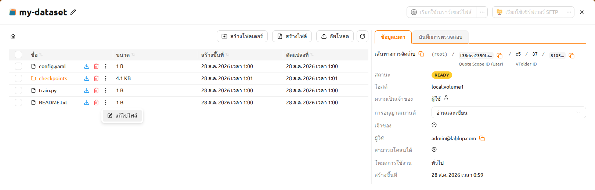
โปรแกรมแก้ไขไฟล์ข้อความจะเปิดขึ้นในโมดัลพร้อมอินเทอร์เฟซตัวแก้ไขโค้ด ตัวแก้ไขจะตรวจจับประเภทไฟล์โดยอัตโนมัติตามนามสกุลไฟล์และใช้การเน้นไวยากรณ์ที่เหมาะสม (เช่น Python, JavaScript, Markdown) หัวเรื่องโมดัลจะแสดงชื่อไฟล์และขนาด
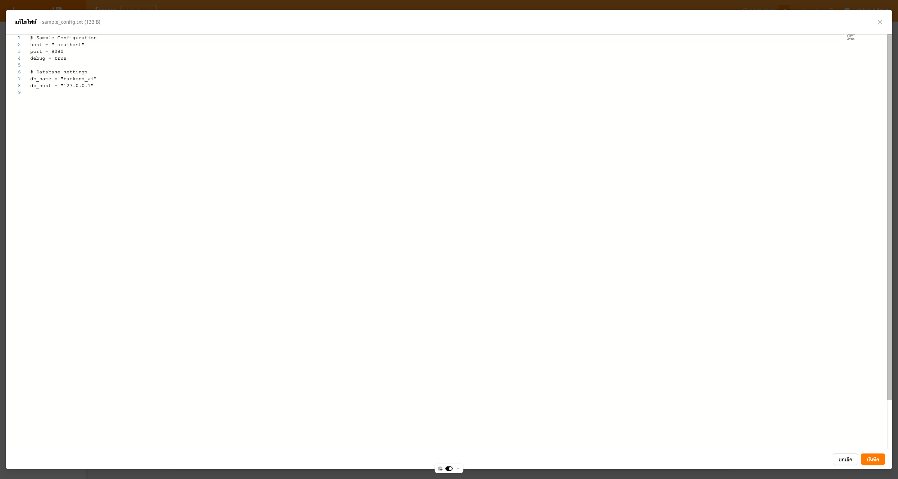
ตัวแก้ไขรองรับทั้งธีมสว่างและธีมมืดที่ตรงกับการตั้งค่า UI ของคุณ คุณสามารถแก้ไขเนื้อหาไฟล์ จากนั้นคลิก 'บันทึก' เพื่ออัปโหลดไฟล์ที่แก้ไข หรือ 'ยกเลิก' เพื่อยกเลิกการเปลี่ยนแปลง
การบันทึกจากตัวแก้ไขจะอัปโหลดไฟล์ที่แก้ไขแล้ว ดังนั้นการดำเนินการ แก้ไขไฟล์ จึงต้องมี ทั้ง สิทธิ์ write_content บนโฟลเดอร์จัดเก็บนี้ (ที่ได้รับผ่านสิทธิ์การแชร์โฟลเดอร์หรือบทบาทของคุณบนโฟลเดอร์) และ สิทธิ์ upload-file บน storage host ที่เก็บโฟลเดอร์นี้ หากขาดสิทธิ์ใดสิทธิ์หนึ่ง จะไม่สามารถใช้การดำเนินการนี้ได้ หากไฟล์โหลดไม่สำเร็จ ข้อความแสดงข้อผิดพลาดจะปรากฏขึ้น
แท็บ Audit Log#
แท็บ Audit Log ในแผงขวาจะแสดงรายการลำดับเวลาของการดำเนินการทั้งหมดที่ทำบนโฟลเดอร์จัดเก็บนี้ (เหตุการณ์การสร้าง อัปเดต ลบ และอื่น ๆ)
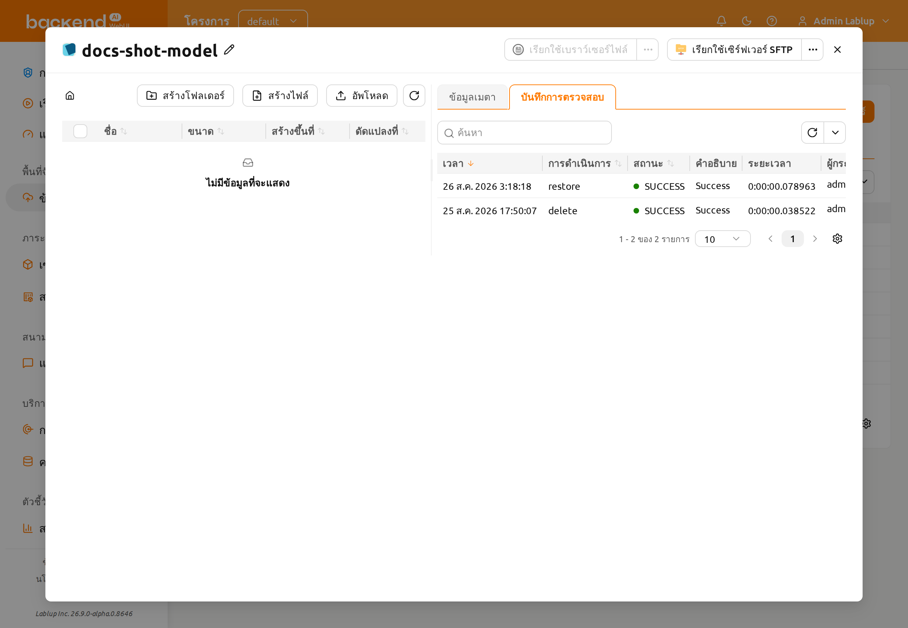
แท็บบันทึกการตรวจสอบจะแสดงคอลัมน์ต่อไปนี้ตามลำดับ:
- เวลา: เวลาที่การดำเนินการเกิดขึ้น
- การดำเนินการ: ประเภทของการดำเนินการ (เช่น create, update, หรือ delete)
- สถานะ: ผลลัพธ์ของการดำเนินการ (เช่น SUCCESS หรือ ERROR)
- คำอธิบาย: รายละเอียดเพิ่มเติมเกี่ยวกับการดำเนินการ
- ระยะเวลา: ระยะเวลาที่ใช้ในการดำเนินการ
- ผู้กระตุ้น: ผู้ใช้ที่ดำเนินการ แสดงในรูปแบบ "email (id)"
คุณสามารถกรองบันทึกตามเวลา การดำเนินการ สถานะ และผู้กระตุ้นได้
เปลี่ยนชื่อโฟลเดอร์#
หากคุณมีสิทธิ์ในการเปลี่ยนชื่อโฟลเดอร์จัดเก็บ ให้เปิดลิ้นชักรายละเอียดของโฟลเดอร์แล้วคลิกปุ่มแก้ไขข้างชื่อโฟลเดอร์ การเปลี่ยนชื่อจะดำเนินการภายในลิ้นชักรายละเอียดเท่านั้น
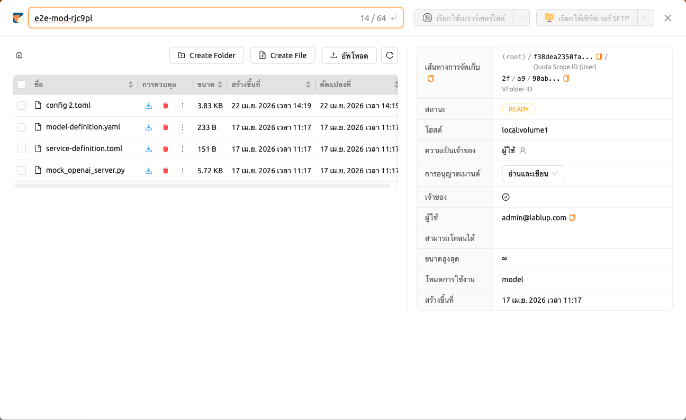
ลบโฟลเดอร์#
หากคุณมีสิทธิ์ในการลบโฟลเดอร์จัดเก็บ คุณสามารถส่งโฟลเดอร์ไปยังแท็บ 'ถังขะยะ' ได้โดยคลิกที่ปุ่ม 'ถังขยะ' เมื่อคุณย้ายโฟลเดอร์ไปยังแท็บถังขยะ โฟลเดอร์จะถูกทำเครื่องหมายเป็นรอการลบ
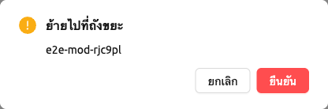
ลบหลายโฟลเดอร์พร้อมกัน#
เลือกช่องทำเครื่องหมายของโฟลเดอร์ที่ต้องการลบ จะมีสรุปการเลือก ({จำนวน} เลือก) และ
ปุ่มถังขยะปรากฏขึ้นเหนือรายการโฟลเดอร์ คลิกปุ่มถังขยะเพื่อเปิดการยืนยัน
ย้ายไปที่ถังขยะ สำหรับโฟลเดอร์ทั้งหมดที่เลือกไว้
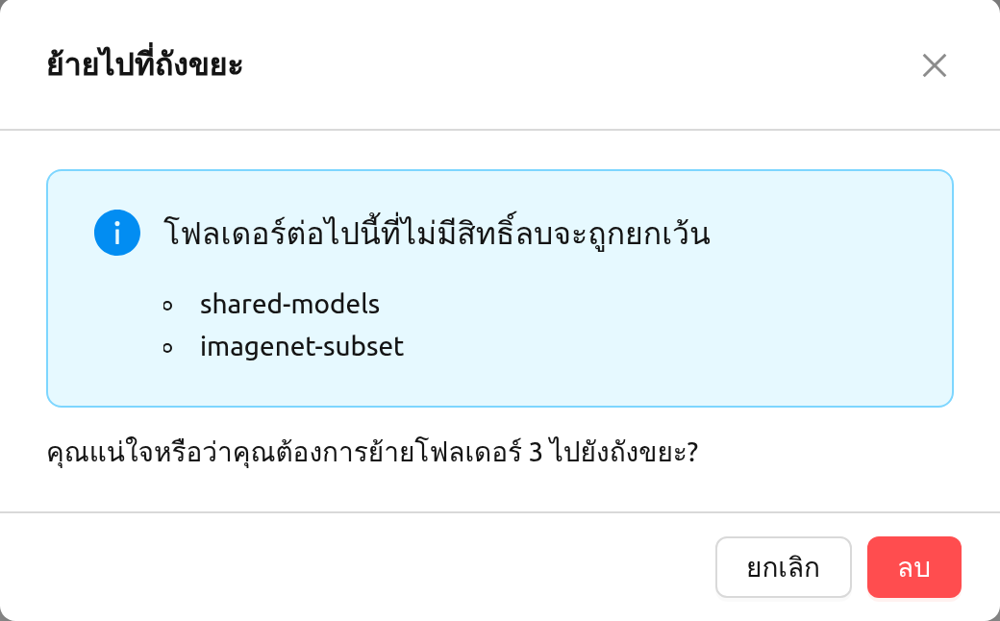
หากรายการที่เลือกมีโฟลเดอร์ที่คุณไม่มีสิทธิ์ลบ โมดัลจะแสดงการแจ้งเตือนหัวข้อ "โฟลเดอร์ต่อไปนี้ที่ไม่มีสิทธิ์ลบจะถูกยกเว้น" พร้อมรายชื่อโฟลเดอร์เหล่านั้น โปรดตรวจสอบรายการนี้ก่อนดำเนินการลบ เฉพาะโฟลเดอร์ที่เหลือหลังจากตัดโฟลเดอร์ที่ไม่มี สิทธิ์ออกเท่านั้นที่จะย้ายไปยังแท็บถังขยะ และข้อความยืนยันใต้การแจ้งเตือนจะแสดงจำนวน เฉพาะโฟลเดอร์ที่ย้ายจริงเท่านั้น
กู้คืนหรือลบอย่างถาวร#
ในสถานะนี้ คุณสามารถกู้คืนโฟลเดอร์โดยคลิกที่ปุ่มกู้คืนในแถวของโฟลเดอร์นั้นในคอลัมน์ ชื่อ หากคุณต้องการลบโฟลเดอร์อย่างถาวร กรุณาคลิกที่ปุ่ม 'ถังขยะ' ในแถวเดียวกัน เมื่อการลบถาวรเริ่มดำเนินการแล้ว จะไม่สามารถกู้คืนหรือลบโฟลเดอร์นั้นซ้ำได้อีก ปุ่มทั้งสองในแถวดังกล่าวจะถูกปิดใช้งานพร้อมเหตุผล "การลบโฟลเดอร์นี้ได้เริ่มขึ้นแล้ว" นอกจากนี้ปุ่ม 'ถังขยะ' ในแถวนั้นจะใช้งานไม่ได้เช่นกันหากคุณไม่มีสิทธิ์ลบโฟลเดอร์นั้น เช่น โฟลเดอร์ที่แชร์หรือโฟลเดอร์ของโปรเจกต์ที่คุณไม่ได้รับอนุญาตให้ลบ โดยจะแสดงเหตุผล "ไม่มีการลบการอนุญาต" แทน
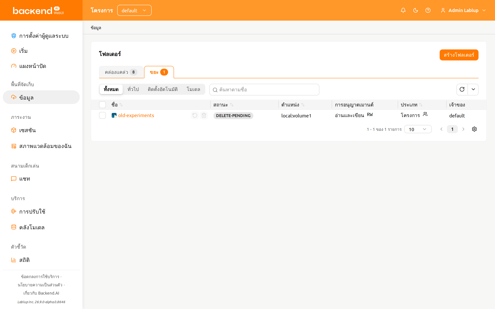
โมดัลยืนยันจะปรากฏขึ้นพร้อมช่องป้อนชื่อโฟลเดอร์ เมื่อพิมพ์ชื่อโฟลเดอร์ถูกต้อง ปุ่ม ลบถาวร จะเปิดใช้งาน และคุณสามารถคลิกเพื่อลบโฟลเดอร์อย่างถาวรได้
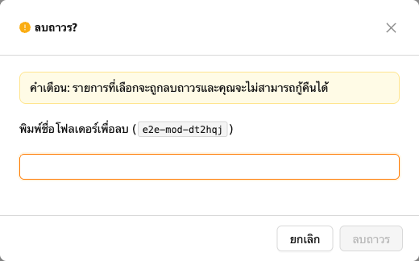
หากโฟลเดอร์ที่คุณกำลังลบเชื่อมโยงกับ โมเดลการ์ด โมดัลยืนยันจะแสดงตัวเลือก "ลบโฟลเดอร์โมเดลที่เกี่ยวข้องด้วย" พร้อมคำเตือน "การลบโฟลเดอร์โมเดลที่เกี่ยวข้องจะลบ โมเดลการ์ดทุกตัวที่ใช้งานโฟลเดอร์นั้นด้วย" การยืนยันการลบจะทำให้โมเดลการ์ดทุกตัวที่ อาศัยโฟลเดอร์จัดเก็บนี้ถูกลบอย่างถาวร ไม่ใช่เฉพาะไฟล์ในโฟลเดอร์เท่านั้น โปรดตรวจสอบ รายการโมเดลการ์ดที่แสดงก่อนยืนยันการลบ เนื่องจากการดำเนินการนี้ไม่สามารถย้อนกลับได้
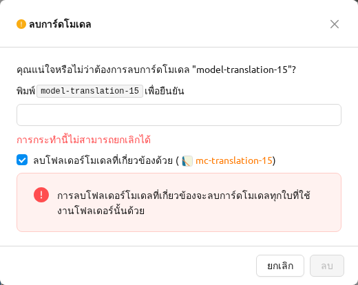
การใช้ FileBrowser#
Backend.AI รองรับ FileBrowser FileBrowser เป็นโปรแกรมที่ช่วยให้คุณจัดการไฟล์บนเซิร์ฟเวอร์ระยะไกลผ่านเว็บเบราว์เซอร์ ซึ่งมีประโยชน์เป็นพิเศษเมื่อต้องการอัปโหลดไดเรกทอรีจากเครื่องของผู้ใช้
ปัจจุบัน Backend.AI มี FileBrowser เป็นแอปพลิเคชันของเซสชันการคำนวณ ดังนั้น จึงมีเงื่อนไขต่อไปนี้ที่จำเป็นต้องมีเพื่อเรียกใช้มัน
- ผู้ใช้สามารถสร้างเซสชันการคอมพิวเตอร์ได้อย่างน้อยหนึ่งเซสชัน
- ผู้ใช้สามารถกำหนดสรรพคุณอย่างน้อย 1 แกนของ CPU และ 512 MB ของหน่วยความจำ
- ภาพที่สนับสนุน FileBrowser ต้องถูกติดตั้ง
คุณสามารถเข้าถึง FileBrowser ได้สองวิธี
- เรียกใช้ FileBrowser จากกล่องโต้ตอบตัวสำรวจไฟล์ของโฟลเดอร์จัดเก็บ
- เริ่มเซสชันการคอมพิวเตอร์โดยตรงจากภาพ FileBrowser ในหน้าเซสชัน
เรียกใช้ FileBrowser จากกล่องโต้ตอบตัวสำรวจโฟลเดอร์#
ไปที่หน้าข้อมูลและเปิดกล่องโต้ตอบตัวสำรวจไฟล์ของโฟลเดอร์จัดเก็บเป้าหมาย คลิกชื่อโฟลเดอร์เพื่อเปิดตัวสำรวจไฟล์
คลิกปุ่ม 'เรียกใช้เบราว์เซอร์ไฟล์' ที่มุมขวาบนของตัวสำรวจ
คุณสามารถเห็นว่า FileBrowser ถูกเปิดในหน้าต่างใหม่ คุณยังสามารถเห็นว่าหมายเหตุข้อมูลที่คุณเปิดหน้าต่างสำรวจกลายเป็นโฟลเดอร์หลัก จากหน้าต่าง FileBrowser คุณสามารถอัปโหลด แก้ไข และลบโฟลเดอร์และไฟล์ใด ๆ ได้อย่างอิสระ

เมื่อผู้ใช้คลิกปุ่ม เรียกใช้เบราว์เซอร์ไฟล์ ระบบ Backend.AI จะสร้างเซสชันการคำนวณเฉพาะสำหรับแอปโดยอัตโนมัติ ดังนั้นในหน้าเซสชัน คุณควรเห็นเซสชันการคำนวณ FileBrowser เป็นความรับผิดชอบของผู้ใช้ในการลบเซสชันการคำนวณนี้
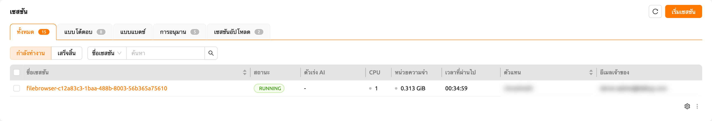
หากคุณปิดหน้าต่าง FileBrowser โดยไม่ได้ตั้งใจและต้องการเปิดใหม่ เพียงแค่ไปที่หน้าเซสชันและคลิกปุ่มแอปพลิเคชัน FileBrowser ของเซสชันการคำนวณ FileBrowser
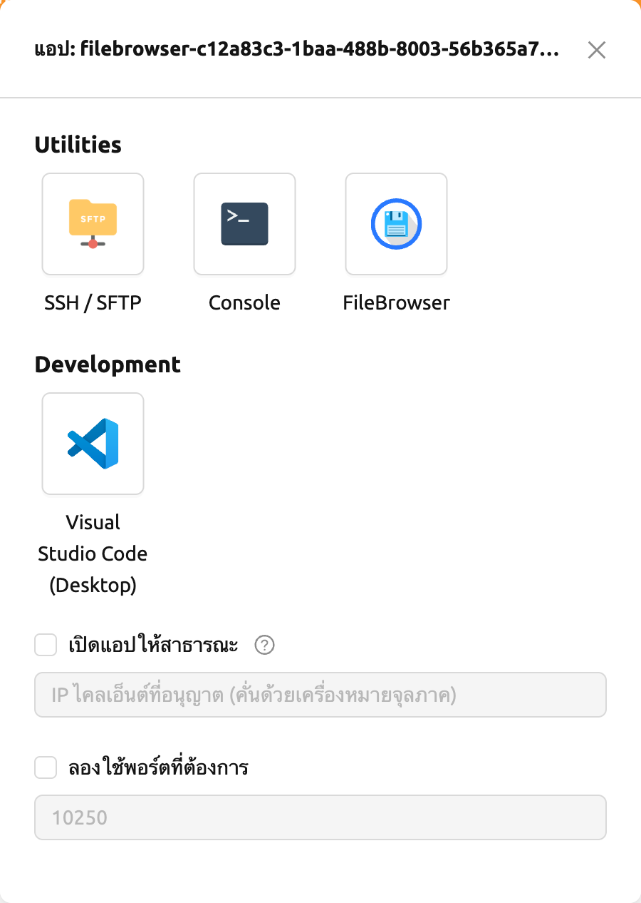
เมื่อคุณคลิกที่ปุ่ม เรียกใช้เบราว์เซอร์ไฟล์ อีกครั้งในตัวสำรวจโฟลเดอร์จัดเก็บ จะมีการสร้างเซสชันการคำนวณใหม่และจะมีการแสดงเซสชัน FileBrowser ทั้งหมดสองรายการ
สร้างเซสชันการคำนวณด้วยภาพ FileBrowser#
คุณสามารถสร้างเซสชันคอมพิวเตอร์ได้โดยตรงด้วยภาพที่รองรับโดย FileBrowser คุณจำเป็นต้องติดตั้งโฟลเดอร์จัดเก็บอย่างน้อยหนึ่งโฟลเดอร์เพื่อเข้าถึงพวกเขา คุณสามารถใช้ FileBrowser ได้โดยไม่มีปัญหาแม้ว่าคุณจะไม่ติดตั้งโฟลเดอร์จัดเก็บใด ๆ แต่ไฟล์ที่อัปโหลด/อัปเดตทุกไฟล์จะหายไปหลังจากเซสชันสิ้นสุด
ไดเรกทอรีรากของ FileBrowser จะเป็น /home/work ดังนั้นคุณจึงสามารถเข้าถึง
โฟลเดอร์จัดเก็บที่เมาท์ไว้สำหรับเซสชันการคำนวณได้ทั้งหมด
ตัวอย่างการใช้งานพื้นฐานของ FileBrowser#
ในส่วนนี้จะแนะนำตัวอย่างการใช้งานพื้นฐานของ FileBrowser ใน Backend.AI การใช้งาน FileBrowser ส่วนใหญ่นั้นเข้าใจได้ง่ายและเป็นไปโดยสัญชาตญาณ แต่หากคุณต้องการคู่มือที่ละเอียดกว่านี้ โปรดดูที่ เอกสาร FileBrowser
อัปโหลดไดเรกทอรีท้องถิ่นโดยใช้ FileBrowser
FileBrowser รองรับการอัปโหลดไดเรกทอรีท้องถิ่นหนึ่งหรือหลายไดเรกทอรีในขณะที่รักษาโครงสร้างต้นไม้ไว้ คลิกปุ่มอัปโหลดที่มุมขวาบนของหน้าต่าง จากนั้นคลิกปุ่มโฟลเดอร์ จะมีการแสดงกล่องโต้ตอบสำรวจไฟล์ท้องถิ่นขึ้นมา และคุณสามารถเลือกไดเรกทอรีใดก็ได้ที่คุณต้องการอัปโหลด
หากคุณพยายามอัปโหลดไฟล์ไปยังโฟลเดอร์ที่มีสถานะเป็นอ่านอย่างเดียว FileBrowser จะเกิดข้อผิดพลาดของเซิร์ฟเวอร์

ให้เราอัปโหลดไดเรกทอรีที่มีโครงสร้างดังต่อไปนี้
foo
+-- test
| +-- test2.txt
+-- test.txtหลังจากเลือกไดเรกทอรี foo คุณจะเห็นว่าไดเรกทอรีถูกอัปโหลดสำเร็จแล้ว
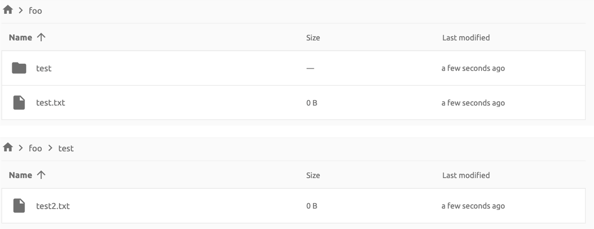
คุณยังสามารถอัปโหลดไฟล์และไดเรกทอรีในเครื่องด้วยการลากและวางได้อีกด้วย
ย้ายไฟล์หรือไดเรกทอรีไปยังไดเรกทอรีอื่น
นอกจากนี้ คุณยังสามารถย้ายไฟล์หรือไดเรกทอรีภายในโฟลเดอร์จัดเก็บผ่าน FileBrowser ได้ โดยทำตามขั้นตอนดังต่อไปนี้
- เลือกไดเรกทอรีหรือไฟล์จาก FileBrowser

- คลิกปุ่ม 'ลูกศร' ที่มุมขวาบนของ FileBrowser

- เลือกปลายทาง

- คลิกปุ่ม 'MOVE'
คุณจะเห็นว่าการย้ายเสร็จสมบูรณ์แล้ว
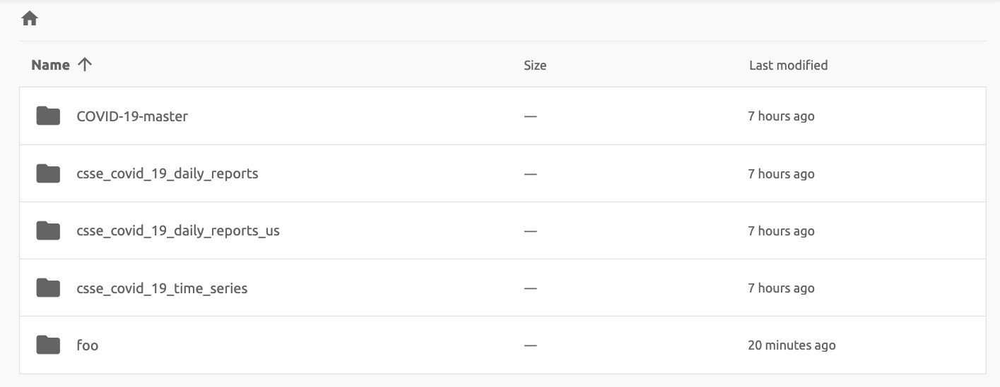
ปัจจุบัน FileBrowser ถูกจัดเตรียมไว้ในรูปแบบแอปพลิเคชันภายในเซสชันการคำนวณ เรากำลังวางแผนที่จะอัปเดต FileBrowser เพื่อให้สามารถทำงานได้อย่างอิสระโดยไม่ต้องสร้างเซสชัน
การใช้งานเซิร์ฟเวอร์ SFTP#
Backend.AI รองรับการอัปโหลดไฟล์ผ่าน SSH / SFTP จากทั้งแอปเดสก์ท็อปและ WebUI แบบเว็บ เซิร์ฟเวอร์ SFTP ช่วยให้คุณอัปโหลดไฟล์ได้อย่างรวดเร็วผ่านสตรีมข้อมูลที่เชื่อถือได้
ขึ้นอยู่กับการตั้งค่าของระบบ การเรียกใช้เซิร์ฟเวอร์ SFTP จากกล่องโต้ตอบไฟล์อาจ ไม่ได้รับอนุญาต
เรียกใช้เซิร์ฟเวอร์ SFTP จากกล่องโต้ตอบตัวสำรวจโฟลเดอร์ในหน้าข้อมูล#
ไปที่หน้าข้อมูล (Data) และเปิดกล่องโต้ตอบตัวสำรวจไฟล์ของโฟลเดอร์จัดเก็บเป้าหมาย คลิกปุ่มโฟลเดอร์หรือชื่อโฟลเดอร์เพื่อเปิดตัวสำรวจไฟล์
คลิกปุ่ม 'เรียกใช้เซิร์ฟเวอร์ SFTP' ที่มุมขวาบนของตัวสำรวจ
กล่องโต้ตอบการเชื่อมต่อ SSH / SFTP จะปรากฏขึ้น และเซสชัน SFTP ใหม่จะถูกสร้างขึ้นโดยอัตโนมัติ (เซสชันนี้จะไม่ส่งผลต่อการใช้ทรัพยากร)
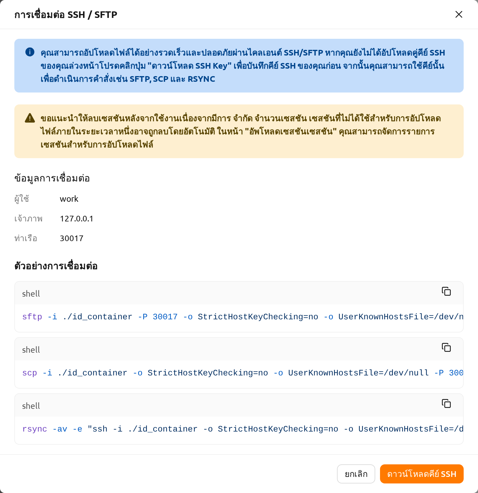
สำหรับการเชื่อมต่อ ให้คลิกปุ่ม 'ดาวน์โหลดคีย์ SSH' เพื่อดาวน์โหลดคีย์ส่วนตัว SSH (id_container) และโปรดจดจำโฮสต์และหมายเลขพอร์ตไว้ จากนั้นคุณสามารถคัดลอกไฟล์ไปยังเซสชันได้โดยใช้โค้ดตัวอย่างการเชื่อมต่อที่ระบุในกล่องโต้ตอบ หรือดูคู่มือต่อไปนี้: คู่มือการเชื่อมต่อ SFTP หากต้องการรักษาไฟล์ไว้ คุณต้องโอนไฟล์ไปยังโฟลเดอร์จัดเก็บ นอกจากนี้ เซสชันจะถูกยุติเมื่อไม่มีการถ่ายโอนข้อมูลเป็นระยะเวลาหนึ่ง
หากคุณอัปโหลดคีย์แพร์ SSH ของคุณเอง id_container จะถูกตั้งค่าเป็นคีย์ส่วนตัว SSH
ของคุณ ดังนั้นคุณไม่จำเป็นต้องดาวน์โหลดคีย์ทุกครั้งที่ต้องการเชื่อมต่อกับคอนเทนเนอร์
ผ่าน SSH โปรดดูการจัดการคีย์แพร์ SSH ของผู้ใช้
โฟลเดอร์ไปป์ไลน์#
แท็บนี้จะแสดงรายการโฟลเดอร์ที่ถูกสร้างขึ้นโดยอัตโนมัติเมื่อมีการดำเนินการไปป์ไลน์ใน FastTrack เมื่อมีการสร้างไปป์ไลน์ โฟลเดอร์ใหม่จะถูกสร้างและเมาท์ไว้ภายใต้ /pipeline สำหรับแต่ละอินสแตนซ์ของงาน (เซสชันการคำนวณ)
โฟลเดอร์เมาท์อัตโนมัติ#
หน้าข้อมูล (Data) มีแท็บโฟลเดอร์เมาท์อัตโนมัติ (Automount Folders) คลิกที่แท็บนี้เพื่อดูรายการโฟลเดอร์ที่มีชื่อขึ้นต้นด้วยจุด (.) เมื่อคุณสร้างโฟลเดอร์โดยระบุชื่อที่ขึ้นต้นด้วยจุด (.) โฟลเดอร์นั้นจะถูกเพิ่มเข้าไปในแท็บโฟลเดอร์เมาท์อัตโนมัติแทนที่จะเป็นแท็บโฟลเดอร์ โฟลเดอร์เมาท์อัตโนมัติเป็นโฟลเดอร์พิเศษที่จะถูกเมาท์ในไดเรกทอรีโฮมของคุณโดยอัตโนมัติ แม้ว่าคุณจะไม่ได้เมาท์ด้วยตนเองตอนสร้างเซสชันการคำนวณก็ตาม การใช้ฟีเจอร์นี้ในการสร้างและใช้โฟลเดอร์จัดเก็บ เช่น .local, .linuxbrew, .pyenv ฯลฯ จะช่วยให้คุณสามารถกำหนดค่าแพ็กเกจหรือสภาพแวดล้อมของผู้ใช้ที่จะไม่เปลี่ยนแปลงไปตามชนิดของเซสชันการคำนวณ
สำหรับข้อมูลเพิ่มเติมเกี่ยวกับการใช้งานโฟลเดอร์เมาท์อัตโนมัติ โปรดดูที่ ตัวอย่างการใช้งานโฟลเดอร์เมาท์อัตโนมัติ
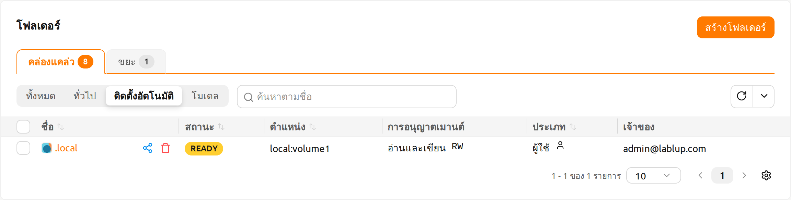
โฟลเดอร์โมเดล#
แท็บโมเดลช่วยให้การให้บริการโมเดลเป็นไปอย่างสะดวกและตรงไปตรงมา คุณสามารถจัดเก็บข้อมูลที่จำเป็น ซึ่งรวมถึงข้อมูลนำเข้าสำหรับการให้บริการโมเดล และข้อมูลสำหรับการฝึกสอน ไว้ในโฟลเดอร์โมเดลได้
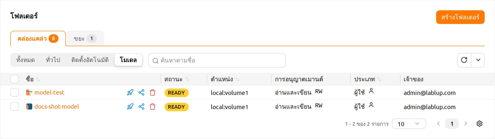